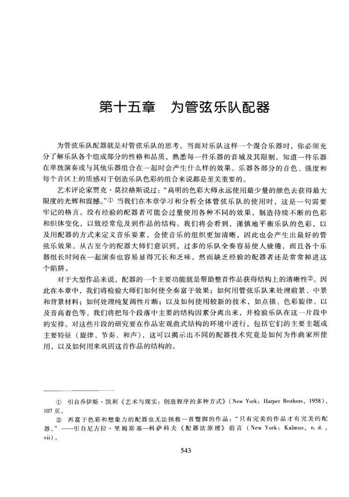
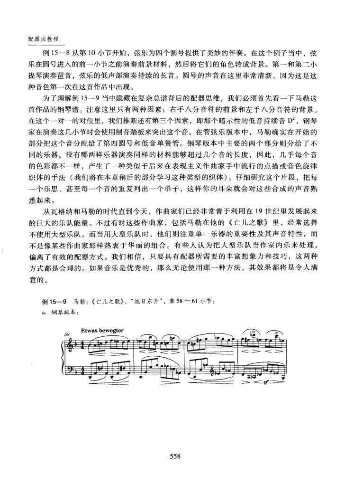
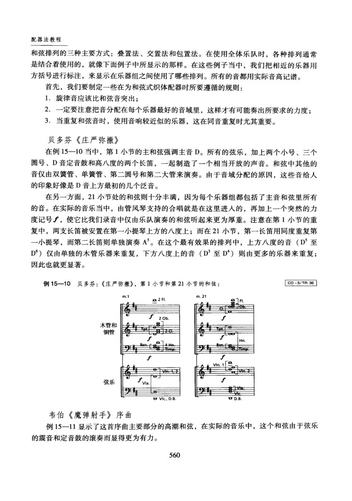
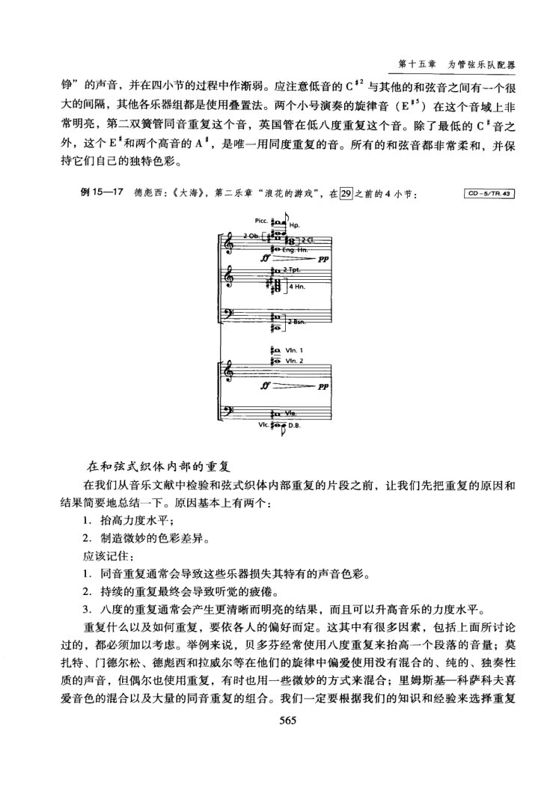
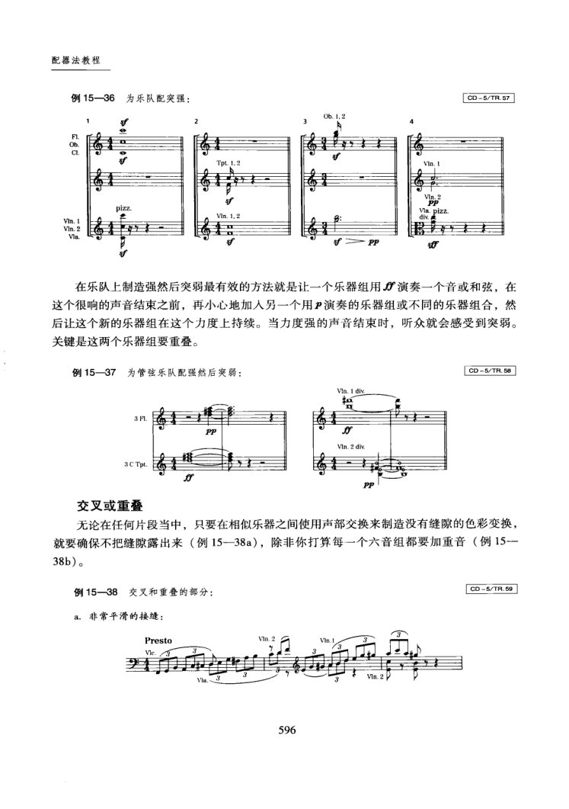

PDF 第 8 页
阿德勒下 · 印刷 p.543 · 第十五章 为管弦乐队配器
第十五章为管弦乐队配器
为管弦乐队配器就是对管弦乐队的思考。当面对乐队这样一个混合乐器时，你必须充
分了解乐队各个组成部分的性格和品质，熟悉每一件乐器的音域及其限制，知道一件乐器
在单独演奏或与其他乐器组合在一起时会产生什么样的效果。乐器各部分的音色、强度和
每个音区上的质感对于创造乐队色彩的组合来说都是至关重要的。
艺术评论家贾克·莫拉格斯说过：“高明的色彩大师永远使用最少量的颜色去获得最大
牢记的格言。没有经验的配器者可能会过量使用各种不同的效果，制造持续不断的色彩
和织体变化，以致经常危及到作品的结构。我们将会看到，谨慎地平衡乐队的色彩，以
及用配器的方式来定义音乐要素，会使音乐的组织更加清晰，因此也会产生出最好的管
弦乐效果。从古至今的配器大师们意识到，过多的乐队全奏容易使人疲倦，而且各个乐
器组长时间在一起演奏也容易显得长和乏味，然而缺乏经验的配器者还是常常掉进这
个陷阱。
对于大型作品来说，配器的一个主要功能就是帮助整首作品获得结构上的清晰性②。因
此在本章中，我们将检验大师们如何使全奏富于效果；如何用管弦乐队来处理前景、中景
和背景材料；如何处理纯复调性片断；以及如何使用较新的技术，如点描、色彩旋律、以
及音高着色等。我们将把每个段落中主要的结构因素分离出来，并检验乐队在这一片段中
的安排。对这些片段的研究要在作品宏观曲式结构的环境中进行，包括它们的主要主题或
主要特征（旋律、节奏、和声），这可以揭示出不同的配器技术究竞是如何为作曲家所使
用，以及如何用来巩固这首作品的结构的。
①引自乔伊斯·凯利《艺术与现实：创造程序的多种方式》（NewYork：Harper Brothers，1958），
107页。
②再富于色彩和想象力的配器也无法拯救一首整脚的作品：“只有完美的作品才有完美的配
器。”—引自尼古拉·里姆斯基一科萨科夫《配器法原理》前言（NewYork：Kalmus，n.d.，
vii)。
543
PDF 第 9 页
阿德勒下 · 印刷 p.544 · 第十五章 为管弦乐队配器 · 同度和八度的全奏；第十五章 · 同度和八度的全奏配器法教程
同度和八度的全奏
我们将从检验如何使用全奏的织体技术来开始。全奏（tuti）是个意大利词，指同
时使用全部或大部分的乐队乐器。我们一般使用两种类型的全奏：（1）部分全奏，即
仅使用手边的某些乐器；（2）全体全奏，即同时使用乐队中的每一件（或几乎每一
件）乐器。
下面摘录的例子将显示出有效地使用同度或八度乐队全奏的片段。我们将对每一个例
子分别进行分析，以便把创造出这种巨大效果的不同手法分离出来。
同度全奏
由于受乐器音域的限制，真正的同度全奏是非常少的。例15一1是一个同度的部分全
奏的范例。我们可以看到作曲家省略了长笛和双簧管，因为它们的音域无法向下延伸到足
以演奏整个片段。但现在的作曲家有可能让双簧管来强调211小节的，也有可能用加弱
音器的小号来赋予这个重音以特殊的韵味。然而，尽管现代作曲家也有可能让小号演奏整
个片段，但这却不是小号最好的音域。请注意，在原谱中，长号被标记为PPP，以避免笼罩
整个乐队。小提琴声部在这里被指定全部在G弦上演奏（“4ecorde"），它的声音使这个同
度片段的力量得到加强。即使低音提琴完全可以演奏这个同度片段，作曲家还是没有使用
它，因为低音提琴高音的音准很难控制。除此之外，在这个高音音域，低音提琴的声音虚
弱，对整体乐队的声音效果没有什么贡献。
弦乐和长号声部使用各种方式的发音方法，加上中提琴的震音（很奇怪只有这一种乐
器使用震音），给这个平滑并由木管和圆号连奏的线条增加了紧张度。这个富于想象但又不
显露的安排给原本可能是非常平白的旋律陈述以微妙的点缀。
八度全奏
例15一2显示出从130小节开始的八度全体全奏的例子，这发生在这首交响曲第一部
分结尾的高潮处。巴伯通过加人铜管乐器和定音鼓来重复乐队其他部分演奏的D音，以造
成这个渐强。这个同度的渐强在131～132小节处，即当这一段落的核心乐思返回并扩展到
几个八度时，达到高潮。在这里，巴伯非常精致地将重复不断地扩大，以制造不断变化的
乐器音色。
544
PDF 第 19 页
阿德勒下 · 印刷 p.554 · 第十五章 · 乐队中前景、中景和背景因素的分配配器法教程
乐队中前景、中景和背景因素的分配
在前几章中，我们讨论了配器时在乐队各个乐器组中前景、中景和背景因素的问题，
以及在各个乐器组内部的一些组合的问题。在这一章中，我们将要介绍全体乐队在配器中
是如何区分前景、中景和背景的。我们将用这些术语来描述那些清楚地展现旋律加伴奏这
一更符合传统观念的织体，严格的主调和弦式织体，以及那些由两个或更多不同乐思构成
的（其中的一个常常会在旋律的显著性上比其它的乐思更为重要）、复调倾向更加明显的
织体。
在主调织体当中
在这一节中，我们将要从前景和背景的角度研究主调音乐配器中不同的种类：
1．有伴奏的旋律；
2.独立和弦的声部分配（在这一和弦内部的空间和重复）；
3.在和弦式织体中的重复及声部进行。
有伴奏的旋律
在这一类型中最明显而又有效果的例子摘自柴科夫斯基的交响诗《里米尼的弗兰切斯
卡》（例15一7)。旋律由单簧管单独引人，然后非常自然地接到由弦乐主调织体伴奏的音
调中。一般来说，伴奏的色彩经常要与独奏乐曲形成对比（有时对比还会很强烈），这个例
子就是如此。然而在很多情况下，成功的伴奏是由跟独奏相同或近似的乐器担任的。在这
里，弦乐的拨弦与单簧管的旋律形成对比，使单簧管的声音更温暖。在这里使用弱音器
（consordino）并没有什么意义，因为拨弦不太受弱音器的影响，它是为下一个段落预先准
备的。这个从340小节前弱拍起的段落（小提琴接过单簧管的旋律，用八度在由弦乐的低
音声部以及持续的大管、圆号和定音鼓构成的伴奏之上演奏）与单簧管的呈示形成美妙的
对比。
在这个例子当中，时机的选择，音符和休止符位置的安排，以及色彩的分配都很重要。
把一个新起的乐句（包括弱拍起的乐句）分配给一个新的乐器，或是在新的色彩进人之前
安置一个休止，是引人新的旋律因素并确保它们被明确感知的两种非常好的方式。
例15—7柴科夫斯基：《里米尼的弗兰切斯卡》，第325～349小节：
CD =5/TR.39
325Andante
crese.
dim.et ritenuto ad libitum
554
PDF 第 23 页
阿德勒下 · 印刷 p.558 · 第十五章 · 前景、中景和背景因素的分配
配器法教程
例15一8从第10小节开始，弦乐为四个圆号提供了美妙的伴奏。在这个例子当中，弦
乐在圆号进人的前一小节之前演奏前景材料，然后将它们的角色转成背景。第一和第二小
提琴演奏琶音，弦乐的低声部演奏持续的长音。圆号的声音在这里非常清新，因为这是这
种音色第一次在这首作品中出现。
为了理解例15一9当中隐藏在复杂总谱背后的配器思维，我们必须首先看一下马勒这
首作品的钢琴谱。注意这里只有两种因素：右手八分音符的前景和左手八分音符的背景。
在这个一对一的对位里，我们推断还有第三个因素，即那个暗示性的低音持续音D”，钢琴
家在演奏这几小节时会使用制音踏板来突出这个音。在管弦乐版本中，马勒确实在开始的
部分把这个音分配给了第四圆号和低音单簧管。钢琴版本中主要的两个部分则分给了不
同的乐器。没有哪两样乐器演奏同样的材料能够超过几个音的长度，因此，几乎每个音
的色彩都不一样，产生了一种类似于后来在表现主义作曲家手中流行的点描或音色旋律
织体的手法（我们将在本章稍后的部分学习这种类型的织体）。仔细研究这个片段，把每
一个乐思、甚至每一个音的重复列出一个单子，这样你的耳朵就会对这些合成的声音熟
悉起来。
从瓦格纳和马勒的时代直到今天，作曲家们已经非常善于利用在19世纪里发展起来
的巨大的乐队能量。不过有时这些作曲家，包括马勒在他的《亡儿之歌》里，经常选择
不使用大型乐队。而当用大型乐队时，他们则注重单一乐器的重要性及其声音特性，而
不是像某些作曲家那样热衷于华丽的组合。有些人认为把大型乐队当作室内乐来处理，
偏离了有效的配器方式。我们相信，只要具有配器所需要的丰富想象力和技巧，这两种
方式都是合理的。如果音乐是优秀的，那么无论使用那一种方法，其效果都将是令人满
意的。
例15一9马勒：《亡儿之歌》，“旭日东升”，第58～61小节：
a.钢琴版本：
58
Etwas bewegter
<
558
PDF 第 25 页
阿德勒下 · 印刷 p.560 · 第十五章 · 全体乐队的和弦声部分配
配器法教程
和弦排列的三种主要方式：叠置法、交置法和包置法。在使用全体乐队时，各种排列通常
是结合着使用的，就像下面例子中所显示的那样。在这些例子当中，我们把相近的乐器用
方括号进行标注，来显示在乐器组之间使用了哪些排列。所有的音都用实际音高记谱。
首先，我们要制定一些在为和弦式织体配器时所要遵循的规则：
1.旋律音应该比和弦音突出；
2.一定要注意把音分配在每个乐器最好的音域里，这样才有可能奏出所要求的力度；
3.当重复和弦音时，使用音响较近似的乐器，这在同音重复时尤其重要。
贝多芬《庄严弥撒》
在例15一10当中，第1小节的主和弦强调主音D。所有的弦乐，加上两个小号、三个
圆号、D音定音鼓和高八度的两个长笛，一起制造了一个相当开放的声音。和弦中其他的
音仅由双簧管、单簧管、第二圆号和第二大管来演奏。由于音域分配的原因，这些音给人
的印象好像是D音上方最初的几个泛音。
在另一方面，21小节处的和弦则十分丰满，因为每个乐器组都包括了主音和弦里所有
的音。在实际的音乐当中，由管风琴支持的合唱就是在这里进人的，再加上一个突然的力
度记号f，使它比我们录音中仅由乐队演奏的和弦听起来更为厚重。注意在第1小节的重
复中，两支长笛被安置在第一小提琴上方的八度上；而在21小节，第一长笛用同度重复第
一小提琴，而第二长笛则单独演奏A”。在这个最有效果的排列中，上方八度的音（D”至
D°）仅由单独的木管乐器来重复，下方八度上的音（D”至D"）则由更多的乐器来重复；
因此也就更显著。
例15一10贝多芬：《庄严弥撒》，第1小节和第21小节的和弦：
CD 5/TR.36
m.1
1z w
2 FL.
F.
90:
木管和
铜管
Bsn-BgTmg
f
弦乐
G
Vk., D.B
U D.B.
韦伯《魔弹射手》序曲
例15一11显示了这首序曲主要部分的高潮和弦，在实际的音乐中，这个和弦由于弦乐
的震音和定音鼓的滚奏而显得更为有力。
560
PDF 第 30 页
阿德勒下 · 印刷 p.565 · 第十五章 · 和弦式织体内部的重复
第十五章为管弦乐队配器
铮”的声音，并在四小节的过程中作渐弱。应注意低音的C”与其他的和弦音之间有一个很
大的间隔，其他各乐器组都是使用叠置法。两个小号演奏的旋律音（E*"）在这个音域上非
常明亮，第二双簧管同音重复这个音，英国管在低八度重复这个音。除了最低的C音之
外，这个E"和两个高音的A"，是唯一用同度重复的音。所有的和弦音都非常柔和，并保
持它们自己的独特色彩。
例15一17德彪西：《大海》，第二乐章“浪花的游戏”，在29之前的4小节：
CD 5/TR.43
Picc.
joEng-tn
PP
VIn.1
oVIn.2
PP
vic.o0.B
在和弦式织体内部的重复
在我们从音乐文献中检验和弦式织体内部重复的片段之前，让我们先把重复的原因和
结果简要地总结一下。原因基本上有两个：
1.拾高力度水平；
2.制造微妙的色彩差异。
应该记住：
1.同音重复通常会导致这些乐器损失其特有的声音色彩。
2.持续的重复最终会导致听觉的疲倦。
3.八度的重复通常会产生更清晰而明亮的结果，而且可以升高音乐的力度水平。
重复什么以及如何重复，要依各人的偏好而定。这其中有很多因素，包括上面所讨论
过的，都必须加以考虑。举例来说，贝多芬经常使用八度重复来抬高一个段落的音量；莫
扎特、门德尔松、德彪西和拉威尔等在他们的旋律中偏爱使用没有混合的、纯的、独奏性
质的声音，但偶尔也使用重复，有时也用一些微妙的方式来混合；里姆斯基一科萨科夫喜
爱音色的混合以及大量的同音重复的组合。我们一定要根据我们的知识和经验来选择重复
565
PDF 第 61 页
阿德勒下 · 印刷 p.596 · 第十五章 · 交叉或重叠
配器法教程
例15—36
为乐队配突强：
CD 5/TR.57
F1.
CL
pizz
Mln. 1, 2
Vm.
Vln. 2
utf
在乐队上制造强然后突弱最有效的方法就是让一个乐器组用f演奏一个音或和弦，在
这个很响的声音结束之前，再小心地加入另一个用P演奏的乐器组或不同的乐器组合，然
后让这个新的乐器组在这个力度上持续。当力度强的声音结束时，听众就会感受到突弱。
关键是这两个乐器组要重叠。
例15一37为管弦乐队配强然后突弱：
CD 5/TR.58
VIn. 1 div
FL
PP
Vln. 2 div.
3 C Tpt.
交叉或重叠
无论在任何片段当中，只要在相似乐器之间使用声部交换来制造没有缝隙的色彩变换，
就要确保不把缝隙露出来（例15-38a），除非你打算每一个六音组都要加重音（例15-
38b)。
例15一38交叉和重叠的部分：
CD 5/TR.69
a.非常平滑的接：
Presto
Ve.3
Vla
596